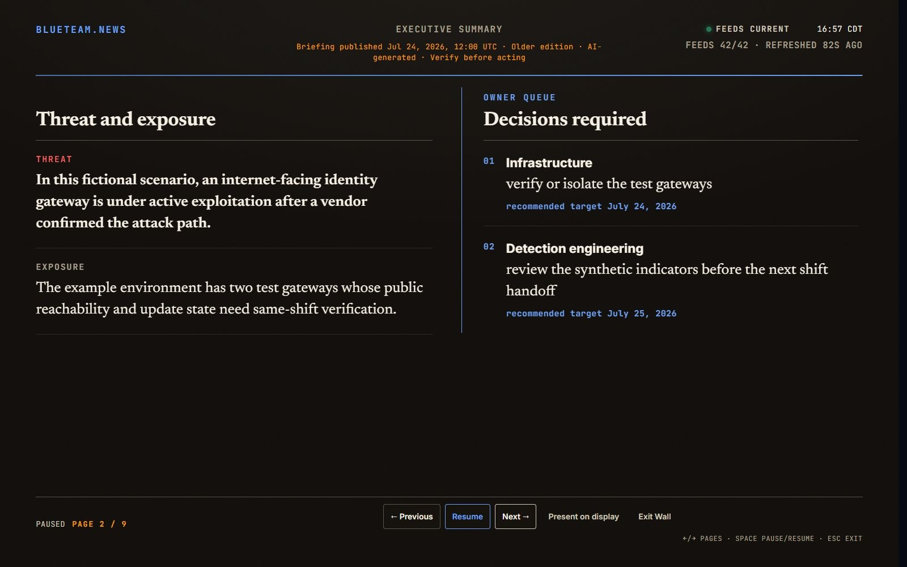
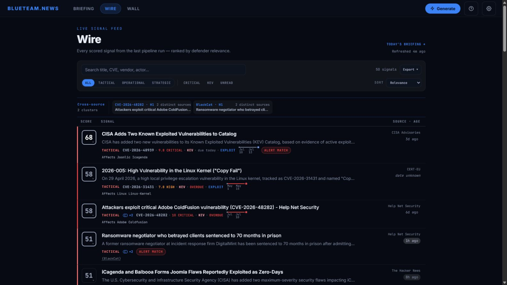

Turn open threat reporting into a daily defensive picture.
BlueTeam.News collects, enriches, and prioritizes public threat reporting into an unattended Wall and an analyst Wire. Add Anthropic for a daily BLUF, calibrated judgments, defensive actions, and leadership-ready synthesis. Evidence stays visible. Telemetry stays off.
Built for the floor, grounded in evidence. Hold the line.
The synthesis layer that turns a scored feed into a shared defensive picture. Generate on demand—or let the server write the daily 05:00 local edition—with a BLUF, calibrated judgments, defensive actions, developing situations, and a 72-hour watchlist.
Every brief is labeled AI-generated, grounded in the day's prioritized signals, and validated before it is saved.
/briefing

THE WALL
Know the landscape without opening another dashboard.
A passive operations-floor display. Keyless mode rotates through KEV changes and prioritized signals; with the Briefing enabled, it becomes a complete daily edition with BLUF, judgments, developing situations, and convergence.
/wall

THE WIRE
Every signal, with the evidence behind its priority.
Filter the latest reporting by tier, urgency, KEV status, and unread state. Inspect source breadth, CVSS and EPSS data, attribution tags, timestamps, and the score's evidence ledger.
/wire
START KEYLESSCollect · enrich · score
Live Wire, KEV changes, score evidence, and the signal-driven Wall—no third-party API account required.
FULL DAILY EXPERIENCESynthesize · judge · act
Add Anthropic for the BLUF, calibrated judgments, defensive actions, leadership synthesis, and complete Wall rotation.
Open http://127.0.0.1:3000—the Wall and Wire begin filling as the first source responses arrive.
2
Put it on the wall
Point the screen at /wall for a walk-by layout that reads across a room. The cursor hides automatically, the rotation updates itself, and Esc exits.
3
Recommended · enable the full daily Briefing
The Wall and Wire run keyless. Add an ANTHROPIC_API_KEY in Settings or .env to add the product's synthesis layer: BLUF, judgments, defensive actions, and the complete Wall rotation. Generate on demand or at 05:00 local time. Each successful generation is billed directly by Anthropic; the app reports the model, token count, and estimated cost.
// the model
Prioritized by the decision it should change.
Flat feeds tell you what was published. BlueTeam.News separates what defenders must act on now, prepare for next, and account for over the longer term. The same three-tier model drives the Wall, Wire, and Briefing.
T1Tacticalshift to 7 daysAct now through the next seven days. SOC, IR, detection.
T2Operationalweeks to 12 monthsAdjust posture over the coming weeks and months. Hunt and intel.
T3Strategicbeyond 12 monthsPrepare for structural changes to the threat environment. Directors and the board.
Analysts live in Tactical and Operational; leadership reads Operational and Strategic. One system serves both, on purpose.
// scoring
Priority you can inspect—not a black box.
BlueTeam.News groups related reporting, measures source breadth, enriches vulnerabilities with KEV, CVSS, and EPSS data, and scores each signal across recency, source diversity, exploitation, severity, and organizational relevance.
Every score exposes its contributing evidence. Verified catalog facts and heuristic matches are displayed differently. When enabled, the AI Briefing analyzes and synthesizes the result; AI does not decide what enters the queue or what counts as critical.
The scoring and classification live in plain code and are tunable in config.json. If you disagree with a weight, change it.
// network behavior
You can see exactly what leaves the host.
By default, BlueTeam.News connects only to its configured threat feeds and enrichment sources. Enabling the Briefing adds the Anthropic API. Configuring a webhook adds that destination.
There is no telemetry, analytics, account, license check, or runtime CDN. Outbound fetching is SSRF-guarded, and the server binds to localhost by default.
It's MIT, it's one repo, and the network code is small enough to read in a sitting. Don't take our word for it—grep for it.
The public website makes one request to GitHub for the displayed star count. The self-hosted application does not.
// deploy
Runs anywhere Node 22+ runs.
One process, local files only—SQLite for operational state, Markdown for saved briefs, and a gitignored settings file if you add an API key. Back up data/ and briefs/; no external database. Run npm start, open 127.0.0.1:3000, and point the floor display at /wall. The Wall is designed for unattended display with no GPU or WebGL dependency.
Feeds are a config file you edit. The Briefing is opt-in via one API key; when enabled, the server refreshes its evidence and generates a new edition at 05:00 local time. A missed run catches up after restart, and the Wall adopts the saved edition without operator input.
RuntimeNode 22+
Storagelocal files
BriefingAnthropic key
Wall/wall
LicenseMIT
Telemetrynone
// open by design
BlueTeam.News is MIT-licensed and built to be understood, adapted, and challenged. Its source configuration, scoring model, Briefing pipeline, interfaces, and automated tests are all in the repository.
Start with the included public sources, tune the system for your mission, or connect your own feed mirror. Forks are welcome under MIT; the project is maintainer-led, unsolicited pull requests and feature requests are not accepted, and no support or update schedule is promised.
AI tools assisted parts of development, and Anthropic powers the Briefing. AI is not treated as an authority: the code is tested, Briefing output is schema-validated, scoring evidence stays visible, and operators retain final judgment.